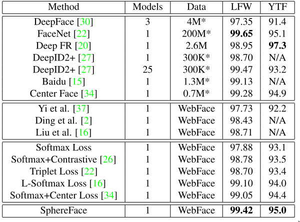

Introduction
In Web can be find many articles and research paper about Face Recognition (just look at scirate) . Most of them introduce or explain some new technique and compare it to baseline, without going into details about choosing elements of pipeline. There also exist some Open-Source, ready to use library for Face-Recognition, where some of them achieve state-of-the-art results. Nice examples are OpenFace, DLib or FaceNet. But what if it turns out that the algorithm does not meet our expectations, what are the method to boost it, what helpful method exist? And how to properly investigate the algorithm to get the answer, is the algorithm is certainly better than the previously used? There is not much systematized information about it, just many papers, each with different pipeline.
In this series of blog-post, we would like to change it by investigating state-of-art technique available until 2017. We will show new method which enable to boost the performance, verify the researcher's proposals under controlled test conditions and answer some questions that may not only bother me (hopefully, it will sth like Myth Buster for Face Recognition). For last years there were many proposition targeted Face Recognition, which we want to test, like:
- TripletLoss
- CenterLoss
- LargeMarginSoftMax
- L2 normalization
- Cosine-Product vs Inner-Product
- Face Specific Augmentation
- Learning using 3D model
- Multi-Task Loss
We hope that such evaluation would be even helpful for other tasks too, like Image Retrieval or One-Shot Classification as these topics are related to Face Recognition really closely. More about idea of this blog-series later, firstly let's look closer into benchmarks of Face Recognition. Thanks to them we can verify if new ideas can really boost the accuracy of overall system.
Leading techniques to test the quality of facial recognition algorithms
Facial recognition has been present in machine learning for a long time, but only since 2008 the progress in quality systems is rapidly increasing. The cause of technology development was primarily the publication of a benchmark named LFW (Labeled Faces in the Wild), which was distinguished primarily by sharing photos taken under uncontrolled conditions. The main test is based on Pair-Matching that is to compare the photos of two people and to judge whether it is the same or another person. Nowadays many methods achieve result close to perfection, ~99.5%. However even such results does not guarantee high performance in other, production condition. This is why the extension of LFW was proposed, named BLUFR. It contains two protocols: verification at fixed FAR (False-Acceptance-Rate) with 50 mln pairs and identification protocol (which is more production-realistic case).
In 2015 another benchmark was proposes, exactly IARPA Janus Benchmark A. In terms on benchmark protocol, there are the same like in BLUFR, but there are based on template. Each template is created based on several The main difference is in image quality and difficulty. Also, in test images are frames extracted from video, which have much lower quality than images from camera. The authors also proposed different idea of testing by creating the template for each person instead of testing similarity of each image of person independently. The creation of template lies in the user's gesture, who can choose its own method for feature merging (like min, max or mean of feature).

Additonal, in 2017 the extension of JANUS-A was introduced, Janus Benchmark-B Face Dataset. Despite of increasing number of test images, the new protocols was introduced, which have more test scenario in comparing images and video-frames and also new face clustering protocol.
The last face benchmark is MegaFace. As name suggest, this is large scale benchmark of Face Recognition (like ImageNet for Image Classification), containing over 1M images (much bigger than LFW and JANUS benchmark). The main idea is having 3 different dataset, distractors as main gallery dataset, FaceScrub used for testing algorithm in normal condition and FGNet used for testing algorithm in age-invariant settings. Like other knows benchmarks, it contain two protocols: verification (over 4 bilion pairs) and identification. In case of Challenge 1, the researcher can choose from two variant based on data size set (Small, < 0.5M, Large > 0.5M of images). In Challenge 2, which was introduced in 2016, each of the competitor have the same training database, containing ~5M images. The aim of that idea is testing the network architectures and algorithm, not the training database (like in case of Challenge 1 where everyone can use their own database).
But how the results of benchmark compare to each other, does improvement in one test generalize to others? Very good compilation of results from many benchmark (not ony introduced above) is presented in paper A Light CNN for Deep Face Representation with Noisy Labels. Authors include inter alia: YTF, YTC, Multi-PIE, CACD-VS, CASIA 2.0 NIR-VIS, Celebrity-1000 ). Analyzing the results, look like the improvement generalize over most of the benchmark. But some of them better show even small improvement of algorithms than others. For example, having better model for about 0.5% in LFW can give boost of even 20% in BLUFR. If we want to see any, even a little improvement in our model, we should choose harder benchmark, even BLUFR.
Modern Face Recognition Technique
The main method for Face Recognition are based on Deep Learning. The researchers are racing in ways to improve quality of system using bigger training sets, new architectures or changing a loss function. At present, the best face recognition technique is Vocord, the winner of identification protocol in MegaFace and second best based on NIST. Unfortunately we do not know any details about getting such high score.
But there are many researcher that unveil details of their method, some of them even get > 99.5% on LFW. Some of them operate on database having ~ 2M images and multiple neural architectures. Others propose changing pipeline (ex. by data preparation) or adding new loss function (ex. CenterLoss). However, most of them show incremental increase of performance using their own pipeline, where each of them have different ways for ex. preprocessing. Such researches are hard to compare and does not bring us closer to achieving even better results in the future because we can not draw concrete conclusions about the learning process, for ex:
- how face should be preprocessed?
- which data augmentation technique helps?
- which additional features in architectures helps?
- which loss function are best?
It is because every scientist uses his or her concept of improving the model, which not always aim to achieve best possible results (as it involve interaction with many variables like database or architecture) but to show the rightness of the thesis. This is obviously an understandable approach, because it is a science. However, practitioners would like to know the limits of current technology of Face Recognition by merging multiple ideas from researchers. It is worth to verify certain theses under controlled conditions so that all test algorithms have equal chances. Many private company have such knowledge, but they does not reveal such secrets.
In order to get acquainted with the current results on the LFW and YTF benchmarks, the table from SphereFace is presented. It is interesting to note that the size of the database used for learning and the number of neural networks used are also given.

These are not all available results, but they give us an overall view of the accuracy of the algorithms. Currently the best result on LFW is 99.83%, obtained by company named Glasix. They provide following description of method:
We followed the Unrestricted, Labeled Outside Data protocol. The ratio of White to Black to Asian is 1:1:1 in the train set, which contains 100,000 individuals and 2 million face images. We spent a week training the networks which contain a improved resnet34 layer and a improved triplet loss layer on a Dual Maxwell-Gtx titan x machine with a four-stage training method.

If you want to see more results from benchmark, look here:
Aim of series
The main aim of the series of post will be creating the full algorithm for Face Recognition, which will be having high results on public benchmarks (using Deep Learning). But the main target will be test on MegaFace Challange 1 - Small and MegaFace Challange 2.
To achieve very competitive results, here following ideas will be tested:
- choosing the NN architecture
- preprocessing of data
- data augmentation techniques
- optimization algorithm
- loss functions
So, at the end of the day, we will learn what pipeline to build to maximize model quality in face recognition tasks. However, in order to be able to draw conclusions from experiments, limitations and initial assumptions will be made to facilitate the analysis of the results.
Limitations:
- algorithms will be working at CASIA-WebFace (0.5M images, 10k individuals)
- 90% of database it used for training, 10% for validation
- while testing, only single features will be extracted from sinlge image( so there will be nothing like
mirror-trick) - only one instance of model will be used (so there will be no feature merging from multiple model)
- start Learning Rate will be chosen from set:
0.1, 0.04, 0.01, 0.001. - for reducing the LR, the detection of
Plateauwill be used
Initial assumptions:
- architectures will be using CASIA database align using MTCNN algorithm
- basic Data Augmentation technique will be
mirror

The size of the database as well as the input images has been selected so as to enable high quality methods, while reducing the time it takes. The number of experiments needed to achieve the final result is enormous, and the computational power is limited.
As a primary determinant of method quality, two results will be considered:
LFW, LFW-BLUFR (both of them share features from same images). Additionally for best models the more complicated tests will be conducted: on IARPA Janus Benchmark-A and MegaFace. The template at IJB-A will be created by taking the mean value.
Each of the experiments will be compared to baseline, the selected method (data-> architecture-> loss), which achieved its result using quite simple methods. This will allow us to evaluate whether the new proposed technology affects the quality of the algorithm positively. However, such an approach is not perfect and sometimes it may happen that the combination of several techniques only reflects the real impact of each. Unfortunately, such results can be missed. So when all the experiments will be done, the large-scale experiment will be conducted (DA or different loss with different scales) to get the best possible result. But earlier we want to sift through these techniques (ex. loss functions, which dozens have been proposed recently), which do not affect the final result to a large extent. In addition, we would like to test our own ideas and see if they make sense.
The posts of each type of experiment will be in the form of a report that will reveal and analyze the results. The length of each post will depend on the subject and the number of experiments needed to confirm or refute the thesis. We expect that, for example, for the purpose of loss functions there will be about 4-5 posts.
It's enough in the introduction, we hope everything is clear. In the next post we will look at the creation of baseline, a reference to further experiments.
References
- Labeled Faces in the Wild: Updates and New Reporting Procedures
- A Benchmark Study of Large-scale Unconstrained Face Recognition
- Pushing the Frontiers of Unconstrained Face Detection and Recognition: IARPA Janus Benchmark A
- IARPA Janus Benchmark-B Face Dataset
- The MegaFace Benchmark: 1 Million Faces for Recognition at Scale
- Level Playing Field for Million Scale Face Recognition
- A Light CNN for Deep Face Representation with Noisy Labels
- Ongoing Face Recognition Vendor Test (FRVT) Part 1: Verification
- SphereFace: Deep Hypersphere Embedding for Face Recognition
- Joint Face Detection and Alignment using Multi-task Cascaded Convolutional Networks